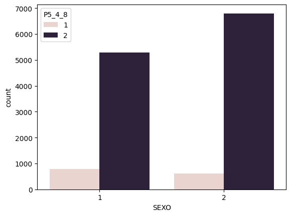
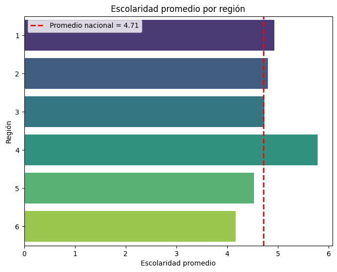
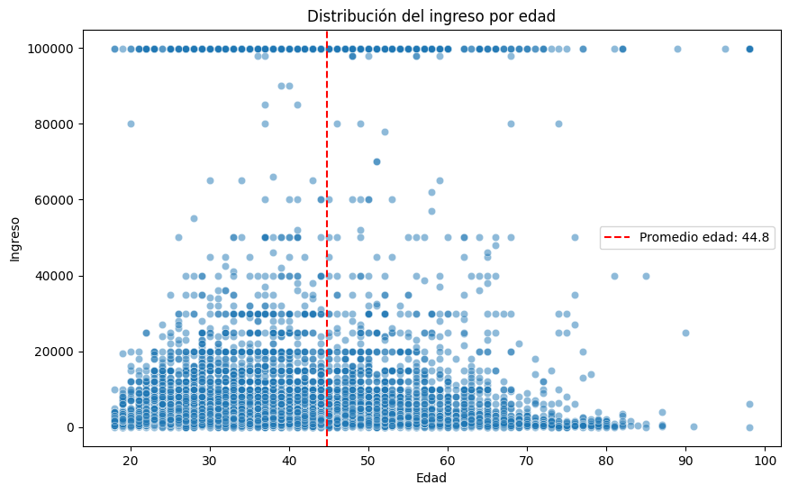
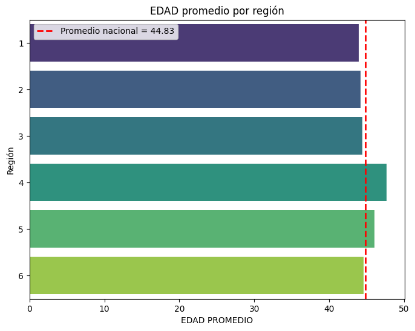
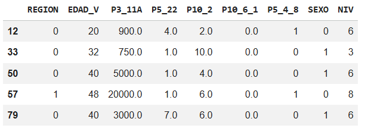
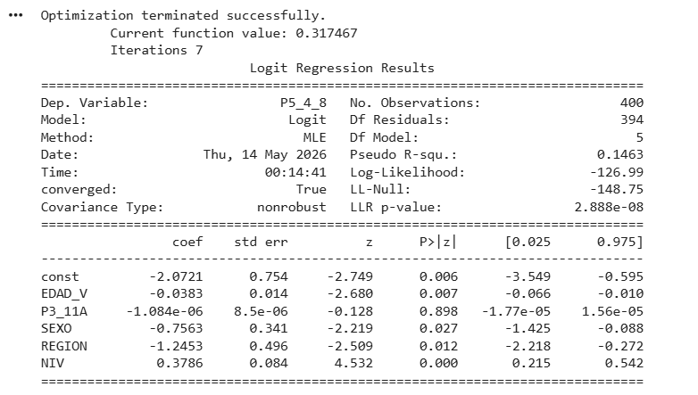
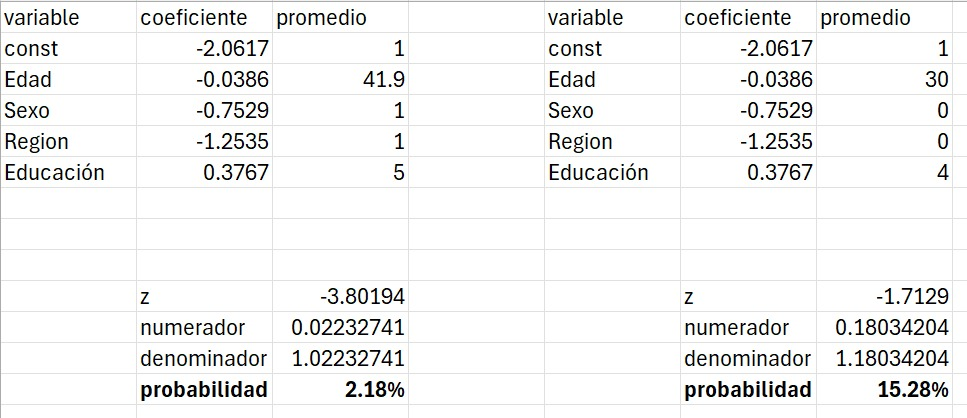

Problemática
La Encuesta Nacional de Inclusión Financiera (ENIF), realizada por el INEGI en colaboración con la CNBV, es el principal instrumento en México para medir cómo la población adulta (18 a 70 años) accede y utiliza productos y servicios financieros.
Se levanta cada tres años para diagnosticar el uso de cuentas, créditos, seguros y Afores.
En México las personas con una edad, escolaridad e ingreso menor al promedio, tienden a abrir una cuenta digital (no bancaria)
como primer cuenta y esta más favorecida hacia hombres. Que al mismo tiempo se ve favorecido a zonas más céntricas del país que a las periferias.
Para poder visualizar la problemática decidimos desarrollar una selección de variables del archivo CSV perteneciente a TModulo, tomando las variables:
"REGIÓN, SEXO, P5_4_8 (Acceso a cuenta Digital), NIV (Escolaridad), EDAD_V(Edad) y P3_11A(Ingreso)"
Esto con el objetivo de delimitarlo y sea más cómodo el manejo
Para nuestro primer resultado con la variable de acceso de cuenta digital y sexo, observamos que hay más hombres que mujeres con cuneta digital, que en proporción para ambos sexos hay más personas que no tienen cuenta digital.

Después para poder hacer una selección entre regiones en la encuesta viene segmentado en 6 regiones las cuales son:
1: Noroeste (Baja california, chihuahua, Durango, etc)
2: Noreste (Coahuila, NL, SLP, etc.)
3: Occidente (Aguascalientes, Guanajuato,etc)
4: CDMX
5: Centrosur y oriente (EDOMEX, Hidalgo, Puebla, etc)
6: Sur (Campeche, Chiapas, Yucatán, etc).
Y por escolaridad que está dividido desde ningun año de escolaridad a docotrado

A lo cual se encontró que el promedio de la escolaridad es 4.71, y se encontró que las regiones con mayor y menor escolaridad al promedio son Ciudad de México (4) y el Sur comprendido por los estados de Campeche, Chiapas, Guerrero, Quintana Roo, Tabasco, Yucatán, Oaxaca (6).
Posterior a ellos se observó el compartimento en la distribución del ingreso de acuerdo a la edad, siendo el promedio de 44.8 de edad

Se observa que la distribución de las personas con menor edad al promedio tienen un sesgo hacia la izquiera, es decir que tienen un menor ingreso a comparacion con individuos con una edad mayor.
Ahora mezclando resultados podemos observar el promedio de edad respecto a las regiones existentes.

Se observa que la región de ciudad de México tiene un promedio de edad mayor al del país y la región sur está por debajo al promedio.
Ahora re categorizando las variables dicotómicas, y segmentando la información a solo los datos de las regiones 4 (CDMX) y 6 (sur) y convirtiendo las demás variables, creamos un modelo logístico para observar qué variables y cómo influyen para la probabilidad de que tengan una cuenta digital o no.


Observamos que de las variables la única que no fue relevante es el ingreso, mientras que la edad, el sexo, la región tienen una relación inversa, mientras que la escolaridad tiene una relación directa.

Posterior a ellos para calcular las probabilidades encontramos que la probabilidad de encontrar una mujer con de edad promedio de 41 años, de la región 4, con una escolaridad de 5 (secundaria terminada), es de 2.18%%, mientras que encontrar un hombre de la region 6, de una edad promedio de 30 y una escolaridad de 4 (Normal) es de 15.28%.
Derivado de lo anterior nuestras consideraciones para solucionar estos resultados, son: Incrementar programas de educación financiera digital, incentivar pagos digitales, Fortalecer la regulación fintech.
Para instituciones financieras, diseñar aplicaciones más accesibles, reducir requisitos de apertura, crear productos dirigidos a jóvenes y mujeres e implementar estrategias de inclusión regional.